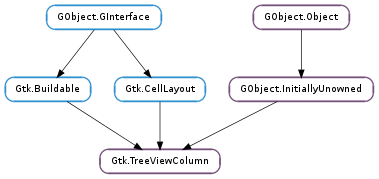

| Name | Type | Flags | Description |
|---|---|---|---|
| alignment | float | r/w | X Alignment of the column header text or widget |
| cell-area | Gtk.CellArea | r/w/c | The Gtk.CellArea used to layout cells |
| clickable | bool | r/w | Whether the header can be clicked |
| expand | bool | r/w | Column gets share of extra width allocated to the widget |
| fixed-width | int | r/w | Current fixed width of the column |
| max-width | int | r/w | Maximum allowed width of the column |
| min-width | int | r/w | Minimum allowed width of the column |
| reorderable | bool | r/w | Whether the column can be reordered around the headers |
| resizable | bool | r/w | Column is user-resizable |
| sizing | Gtk.TreeViewColumnSizing | r/w | Resize mode of the column |
| sort-column-id | int | r/w | Logical sort column ID this column sorts on when selected for sorting |
| sort-indicator | bool | r/w | Whether to show a sort indicator |
| sort-order | Gtk.SortType | r/w | Sort direction the sort indicator should indicate |
| spacing | int | r/w | Space which is inserted between cells |
| title | str | r/w | Title to appear in column header |
| visible | bool | r/w | Whether to display the column |
| widget | Gtk.Widget | r/w | Widget to put in column header button instead of column title |
| width | int | r | Current width of the column |
| x-offset | int | r | Current X position of the column |
| Name | Parameters | Return | Description |
|---|---|---|---|
| clicked | Emits the “clicked” signal on the column. This function will only work if tree_column is clickable. |
| Name | Type | Access |
|---|---|---|
| parent_instance | GObject.InitiallyUnowned | r |
Bases: GObject.InitiallyUnowned, Gtk.Buildable, Gtk.CellLayout
The Gtk.TreeViewColumn object represents a visible column in a Gtk.TreeView widget. It allows to set properties of the column header, and functions as a holding pen for the cell renderers which determine how the data in the column is displayed.
Please refer to the tree widget conceptual overview for an overview of all the objects and data types related to the tree widget and how they work together.
| Returns: | A newly created Gtk.TreeViewColumn. |
|---|---|
| Return type: | Gtk.TreeViewColumn |
Creates a new Gtk.TreeViewColumn.
| Parameters: | area (Gtk.CellArea) – the Gtk.CellArea that the newly created column should use to layout cells. |
|---|---|
| Returns: | A newly created Gtk.TreeViewColumn. |
| Return type: | Gtk.TreeViewColumn |
Creates a new Gtk.TreeViewColumn using area to render its cells.
| Parameters: |
|
|---|
Adds an attribute mapping to the list in tree_column. The column is the column of the model to get a value from, and the attribute is the parameter on cell_renderer to be set from the value. So for example if column 2 of the model contains strings, you could have the “text” attribute of a Gtk.CellRendererText get its values from column 2.
| Parameters: | cell_renderer (Gtk.CellRenderer) – a Gtk.CellRenderer |
|---|---|
| Returns: | True if cell belongs to tree_column. |
| Return type: | bool, x_offset: int, width: int |
Obtains the horizontal position and size of a cell in a column. If the cell is not found in the column, start_pos and width are not changed and False is returned.
| Parameters: | cell_area (cairo.RectangleInt or None) – The area a cell in the column will be allocated, or None |
|---|---|
| Return type: | x_offset: int, y_offset: int, width: int, height: int |
Obtains the width and height needed to render the column. This is used primarily by the Gtk.TreeView.
| Returns: | True, if any of the cells packed into the tree_column are currently visible |
|---|---|
| Return type: | bool |
Returns True if any of the cells packed into the tree_column are visible. For this to be meaningful, you must first initialize the cells with Gtk.TreeViewColumn.cell_set_cell_data ()
| Parameters: |
|
|---|
Sets the cell renderer based on the tree_model and iter. That is, for every attribute mapping in tree_column, it will get a value from the set column on the iter, and use that value to set the attribute on the cell renderer. This is used primarily by the Gtk.TreeView.
Unsets all the mappings on all renderers on the tree_column.
| Parameters: | cell_renderer (Gtk.CellRenderer) – a Gtk.CellRenderer to clear the attribute mapping on. |
|---|
Clears all existing attributes previously set with Gtk.TreeViewColumn.set_attributes ().
Emits the “clicked” signal on the column. This function will only work if tree_column is clickable.
| Parameters: | cell (Gtk.CellRenderer) – A Gtk.CellRenderer |
|---|
Sets the current keyboard focus to be at cell, if the column contains 2 or more editable and activatable cells.
| Returns: | The current alignent of tree_column. |
|---|---|
| Return type: | float |
Returns the current x alignment of tree_column. This value can range between 0.0 and 1.0.
| Returns: | The button for the column header. |
|---|---|
| Return type: | Gtk.Widget |
Returns the button used in the treeview column header
| Returns: | True if user can click the column header. |
|---|---|
| Return type: | bool |
Returns True if the user can click on the header for the column.
| Returns: | True if the column expands to fill available space. |
|---|---|
| Return type: | bool |
Returns True if the column expands to fill available space.
| Returns: | The fixed width of the column. |
|---|---|
| Return type: | int |
Gets the fixed width of the column. This may not be the actual displayed width of the column; for that, use Gtk.TreeViewColumn.get_width ().
| Returns: | The maximum width of the tree_column. |
|---|---|
| Return type: | int |
Returns the maximum width in pixels of the tree_column, or -1 if no maximum width is set.
| Returns: | The minimum width of the tree_column. |
|---|---|
| Return type: | int |
Returns the minimum width in pixels of the tree_column, or -1 if no minimum width is set.
| Returns: | True if the tree_column can be reordered by the user. |
|---|---|
| Return type: | bool |
Returns True if the tree_column can be reordered by the user.
| Returns: | True, if the tree_column can be resized. |
|---|---|
| Return type: | bool |
Returns True if the tree_column can be resized by the end user.
| Returns: | The type of tree_column. |
|---|---|
| Return type: | Gtk.TreeViewColumnSizing |
Returns the current type of tree_column.
| Returns: | the current sort_column_id for this column, or -1 if this column can’t be used for sorting. |
|---|---|
| Return type: | int |
Gets the logical sort_column_id that the model sorts on when this column is selected for sorting. See Gtk.TreeViewColumn.set_sort_column_id ().
| Returns: | whether the sort indicator arrow is displayed |
|---|---|
| Return type: | bool |
Gets the value set by Gtk.TreeViewColumn.set_sort_indicator ().
| Returns: | the sort order the sort indicator is indicating |
|---|---|
| Return type: | Gtk.SortType |
Gets the value set by Gtk.TreeViewColumn.set_sort_order ().
| Returns: | the spacing of tree_column. |
|---|---|
| Return type: | int |
Returns the spacing of tree_column.
| Returns: | the title of the column. This string should not be modified or freed. |
|---|---|
| Return type: | str |
Returns the title of the widget.
| Returns: | The tree view wherein column has been inserted if any, None otherwise. |
|---|---|
| Return type: | Gtk.Widget |
Returns the Gtk.TreeView wherein tree_column has been inserted. If column is currently not inserted in any tree view, None is returned.
| Returns: | whether the column is visible or not. If it is visible, then the tree will show the column. |
|---|---|
| Return type: | bool |
Returns True if tree_column is visible.
| Returns: | The Gtk.Widget in the column header, or None |
|---|---|
| Return type: | Gtk.Widget |
Returns the Gtk.Widget in the button on the column header. If a custom widget has not been set then None is returned.
| Returns: | The current width of tree_column. |
|---|---|
| Return type: | int |
Returns the current size of tree_column in pixels.
| Returns: | The current X offset of tree_column. |
|---|---|
| Return type: | int |
Returns the current X offset of tree_column in pixels.
| Parameters: |
|
|---|
Adds the cell to end of the column. If expand is False, then the cell is allocated no more space than it needs. Any unused space is divided evenly between cells for which expand is True.
| Parameters: |
|
|---|
Packs the cell into the beginning of the column. If expand is False, then the cell is allocated no more space than it needs. Any unused space is divided evenly between cells for which expand is True.
Flags the column, and the cell renderers added to this column, to have their sizes renegotiated.
| Parameters: | xalign (float) – The alignment, which is between [0.0 and 1.0] inclusive. |
|---|
Sets the alignment of the title or custom widget inside the column header. The alignment determines its location inside the button – 0.0 for left, 0.5 for center, 1.0 for right.
Sets the attributes in the list as the attributes of tree_column. The attributes should be in attribute/column order, as in Gtk.TreeViewColumn.add_attribute (). All existing attributes are removed, and replaced with the new attributes.
| Parameters: |
|
|---|
Sets the Gtk.TreeCellDataFunc to use for the column. This function is used instead of the standard attributes mapping for setting the column value, and should set the value of tree_column ‘s cell renderer as appropriate. func may be None to remove an older one.
| Parameters: | clickable (bool) – True if the header is active. |
|---|
Sets the header to be active if clickable is True. When the header is active, then it can take keyboard focus, and can be clicked.
| Parameters: | expand (bool) – True if the column should expand to fill available space. |
|---|
Sets the column to take available extra space. This space is shared equally amongst all columns that have the expand set to True. If no column has this option set, then the last column gets all extra space. By default, every column is created with this False.
Along with “fixed-width”, the “expand” property changes when the column is resized by the user.
| Parameters: | fixed_width (int) – The new fixed width, in pixels, or -1. |
|---|
If fixed_width is not -1, sets the fixed width of tree_column ; otherwise unsets it. The effective value of fixed_width is clamped between the minumum and maximum width of the column; however, the value stored in the “fixed-width” property is not clamped. If the column sizing is Gtk.TreeViewColumnSizing.GROW_ONLY or Gtk.TreeViewColumnSizing.AUTOSIZE, setting a fixed width overrides the automatically calculated width. Note that fixed_width is only a hint to GTK+; the width actually allocated to the column may be greater or less than requested.
Along with “expand”, the “fixed-width” property changes when the column is resized by the user.
| Parameters: | max_width (int) – The maximum width of the column in pixels, or -1. |
|---|
Sets the maximum width of the tree_column. If max_width is -1, then the maximum width is unset. Note, the column can actually be wider than max width if it’s the last column in a view. In this case, the column expands to fill any extra space.
| Parameters: | min_width (int) – The minimum width of the column in pixels, or -1. |
|---|
Sets the minimum width of the tree_column. If min_width is -1, then the minimum width is unset.
| Parameters: | reorderable (bool) – True, if the column can be reordered. |
|---|
If reorderable is True, then the column can be reordered by the end user dragging the header.
| Parameters: | resizable (bool) – True, if the column can be resized |
|---|
If resizable is True, then the user can explicitly resize the column by grabbing the outer edge of the column button. If resizable is True and sizing mode of the column is Gtk.TreeViewColumnSizing.AUTOSIZE, then the sizing mode is changed to Gtk.TreeViewColumnSizing.GROW_ONLY.
| Parameters: | type (Gtk.TreeViewColumnSizing) – The Gtk.TreeViewColumnSizing. |
|---|
Sets the growth behavior of tree_column to type.
| Parameters: | sort_column_id (int) – The sort_column_id of the model to sort on. |
|---|
Sets the logical sort_column_id that this column sorts on when this column is selected for sorting. Doing so makes the column header clickable.
| Parameters: | setting (bool) – True to display an indicator that the column is sorted |
|---|
Call this function with a setting of True to display an arrow in the header button indicating the column is sorted. Call Gtk.TreeViewColumn.set_sort_order () to change the direction of the arrow.
| Parameters: | order (Gtk.SortType) – sort order that the sort indicator should indicate |
|---|
Changes the appearance of the sort indicator.
This does not actually sort the model. Use Gtk.TreeViewColumn.set_sort_column_id () if you want automatic sorting support. This function is primarily for custom sorting behavior, and should be used in conjunction with Gtk.TreeSortable.set_sort_column_id () to do that. For custom models, the mechanism will vary.
The sort indicator changes direction to indicate normal sort or reverse sort. Note that you must have the sort indicator enabled to see anything when calling this function; see Gtk.TreeViewColumn.set_sort_indicator ().
| Parameters: | spacing (int) – distance between cell renderers in pixels. |
|---|
Sets the spacing field of tree_column, which is the number of pixels to place between cell renderers packed into it.
| Parameters: | title (str) – The title of the tree_column. |
|---|
Sets the title of the tree_column. If a custom widget has been set, then this value is ignored.
| Parameters: | visible (bool) – True if the tree_column is visible. |
|---|
Sets the visibility of tree_column.
| Parameters: | widget (Gtk.Widget or None) – A child Gtk.Widget, or None. |
|---|
Sets the widget in the header to be widget. If widget is None, then the header button is set with a Gtk.Label set to the title of tree_column.